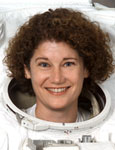

Lyndon B. Johnson Space Center
Houston, Texas 77058
|
National Aeronautics and Space Administration Lyndon B. Johnson Space Center Houston, Texas 77058 |
 |
Biographical Data |
||
Susan J. Helms (Lieutenant General, USAF)
NASA Astronaut (former)
PERSONAL DATA: Born February 26, 1958, in Charlotte, North Carolina, but considers Portland, Oregon, to be her hometown. She enjoys piano and other musical activities, jogging, traveling, reading, computers and cooking.
EDUCATION: Graduated from Parkrose Senior High School, Portland, Oregon, in 1976; received a Bachelor of Science degree in Aeronautical Engineering from the U.S. Air Force Academy in 1980 and a Master of Science degree in Aeronautics/Astronautics from Stanford University in 1985.
ORGANIZATIONS: Women Military Aviators, U.S. Air Force Academy Association of Graduates, Stanford Alumni Association, Association of Space Explorers, Sea/Space Symposium, Chi Omega Alumni.
SPECIAL HONORS: Distinguished Superior Service Medal with two oak leaf clusters, Legion of Merit with three oak leaf clusters, Defense Meritorious Service Medal with two oak leaf clusters, Meritorious Service Medal with oak leaf cluster, Air Force Commendation Medal, NASA Distinguished Service Medal, NASA Space Flight Medals and the NASA Outstanding Leadership Medal. Named the Air Force Armament Laboratory Junior Engineer of the Year in 1983. A Distinguished Graduate of the USAF Test Pilot School and recipient of the R.L. Jones Award for Outstanding Flight Test Engineer, Class 88A. In 1990, she received the Aerospace Engineering Test Establishment Commanding Officer's Commendation, a special award that is unique to the Canadian Forces. In 2008, she received both the Thomas D. White Award for Outstanding Contributions to Space and the Dr. Kurt H. Debus Award for Aerospace Achievements and Contributions in Florida. She was awarded the Russian Medal of Merit for Space Exploration in 2012 for her great contribution in the development of international cooperation in human space exploration. Helms was inducted into the U.S. Astronaut Hall of Fame in 2011.
EXPERIENCE: Helms graduated from the U.S. Air Force Academy in 1980. She received her commission and was assigned to Eglin Air Force Base, Florida, as an F-16 Weapons Separation Engineer with the Air Force Armament Laboratory. In 1982, she became the lead engineer for F-15 weapons separation. In 1984, she was selected to attend graduate school. She received her degree from Stanford University in 1985 and was assigned as an assistant professor of aeronautics at the U.S. Air Force Academy. In 1987, she attended the Air Force Test Pilot School at Edwards Air Force Base, California. After completing one year of training as a Flight Test Engineer, Helms was assigned as a U.S. Air Force Exchange Officer to the Aerospace Engineering Test Establishment, Canadian Forces Base, Cold Lake, Alberta, Canada, where she worked as a Flight Test Engineer and project officer on the CF-18 aircraft. She was managing the development of a CF-18 Flight Control System Simulation for the Canadian Forces when selected for the astronaut program. As a Flight Test Engineer, Helms flew in 30 different types of U.S. and Canadian military aircraft.
After a 12-year NASA career that included 211 days in space, Helms returned to the U.S. Air Force in July 2002 to take a position at Headquarters U.S. Air Force Space Command. In June of 2006, she was appointed a Brigadier General and became Commander of the 45th Space Wing and Director, Eastern Range, Patrick Air Force Base, Florida. As the 45th Space Wing Commander, she was responsible for the processing and launch of U.S. Government and commercial satellites from Cape Canaveral Air Force Station, Florida. From November 2006 to January 2011 she served as the Director of Plans and Policy for the United States Strategic Command (USSTRATCOM), Offutt Air Force Base, Nebraska, where she earned the rank of Major General. In 2011, she was appointed to the rank of Lieutenant General and became Commander, 14th Air Force (Air Forces Strategic), Air Force Space Command and Commander, Joint Functional Component Command for Space (JFCC SPACE), USSTRATCOM, Vandenberg Air Force Base, California. As the Commander of 14th Air Force, General Helms leads more than 20,500 personnel, who are responsible for providing missile warning, space superiority, space situational awareness, satellite operations, space launch and range operations. As Commander, JFCC SPACE, she directs all assigned and attached USSTRACOM forces in providing tailored, responsive, local and global space effects in support of national, USSTRATCOM and combatant commander objectives.
NASA EXPERIENCE: Selected by NASA in January 1990, Helms became an astronaut in July 1991. She flew on STS-54 (1993), STS-64 (1994), STS-78 (1996), STS-101 (2000) and served aboard the International Space Station as a member of the Expedition 2 crew (2001). A veteran of five spaceflights, Helms has logged 5,064 hours in space, including a spacewalk of 8 hours and 56 minutes (world record).
SPACE FLIGHT EXPERIENCE: STS-54 Endeavour, January 13 to January 19, 1993. The primary objective of this mission was the deploy of a $200 million NASA Tracking and Data Relay Satellite (TDRS-F). A Diffuse X-Ray Spectrometer (DXS) that was carried in the payload bay collected more than 80,000 seconds of quality X-ray data that will enable investigators to answer questions about the origin of the Milky Way galaxy. The crew demonstrated the physics principles of everyday toys to an interactive audience of elementary school students across the United States. A highly successful spacewalk resulted in many lessons learned that benefitted the assembly of the International Space Station. Mission duration was 5 days, 23 hours, 38 minutes and 17 seconds.
STS-64 Discovery, September 9 to September 20, 1994. On this flight, Helms served as the flight engineer for orbiter operations and the primary Remote Manipulator System (RMS) operator aboard the space shuttle. The major objective of this flight was to validate the design and operating characteristics of the Lidar in Space Technology Experiment (LITE) by gathering data about the Earth's troposphere and stratosphere. Additional objectives included the deploy and retrieval of SPARTAN-201, a free-flying satellite that investigated the physics of the solar corona and the testing of a new spacewalk maneuvering device. The Shuttle Plume Impingement Flight Experiment (SPIFEX) was used to collect extensive data on the effects of jet thruster impingement in preparation for proximity tasks, such as space station docking. Mission duration was 10 days, 22 hours and 51 minutes.
STS-78 Columbia, June 20 to July 7, 1996. Helms was the payload commander and flight engineer aboard Columbia on the longest space shuttle mission at that time. The mission included studies sponsored by 10 nations and five space agencies and was the first mission to combine both a full microgravity studies agenda and a comprehensive life science investigation. The Life and Microgravity Spacelab mission served as a model for future studies onboard the International Space Station. Mission duration was 16 days, 21 hours and 48 minutes.
STS-101 Atlantis, May 19 to May 29, 2000. This mission was dedicated to the delivery and repair of critical hardware for the International Space Station. Helms' prime responsibilities during this mission were to perform critical repairs to extend the life of the Functional Cargo Block (FGB). In addition, she had prime responsibility of the onboard computer network and served as the mission specialist for rendezvous with the station. Mission duration was 9 days, 20 hours and 9 minutes.
Helms lived and worked aboard the International Space Station as a member of the second crew to inhabit International Space Station Alpha. The Expedition 2 crew (two American astronauts and one Russian cosmonaut) launched on March 8, 2001 aboard STS-102 Discovery and successfully docked with the station on March 9, 2001. The Expedition 2 crew installed and conducted tests on the Canadian-built Space Station Remote Manipulator System (SSRMS) arm and conducted internal and external maintenance tasks (Russian and American) in addition to medical and science experiments. During her stay onboard the station, Helms installed the airlock (transported on the STS-104 mission) using the SSRMS. She and her crewmates also performed a fly-around of the Russian Soyuz spacecraft and welcomed the visiting Soyuz crew, which included the first space tourist. On March 11, she performed a world record 8 hour and 56 minute spacewalk to install hardware to the external body of the laboratory module. Helms spent a total of 163 days aboard the space station. She returned to Earth with the STS-105 crew aboard Discovery on August 22, 2001.
SEPTEMBER 2012
This is the only version available from NASA. Updates must be sought direct from the above named individual.
{kind=link}